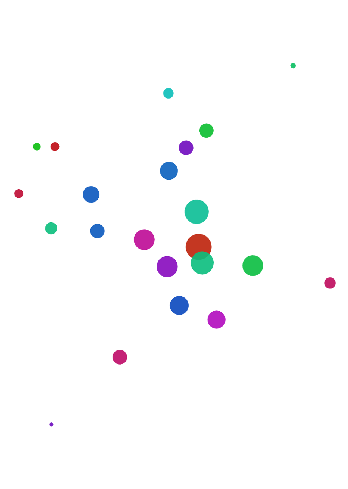
Playlist Visualiser
Translates a Spotify playlist into a composite visual identity. The system extracts features from the uploaded playlist URL and transforms them into a shifting field of orbs to visualise listening habits. It reveals how personal taste becomes encoded as data, fluid in appearance yet shaped by the simplifying logic of algorithmic classification.
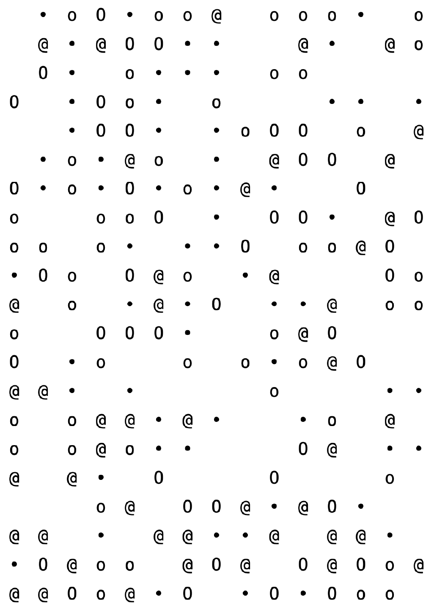
Text Reduction
Converts what users type into shifting arrangements of circles, blocks, triangles, and lines. Reduces meaningful language into these simplified shapes, mirroring how algorithmic systems strip human expression of nuance and encode it into machine-readable categories. Each input creates a visual that reflects not what the user writes, but how the system classifies them.
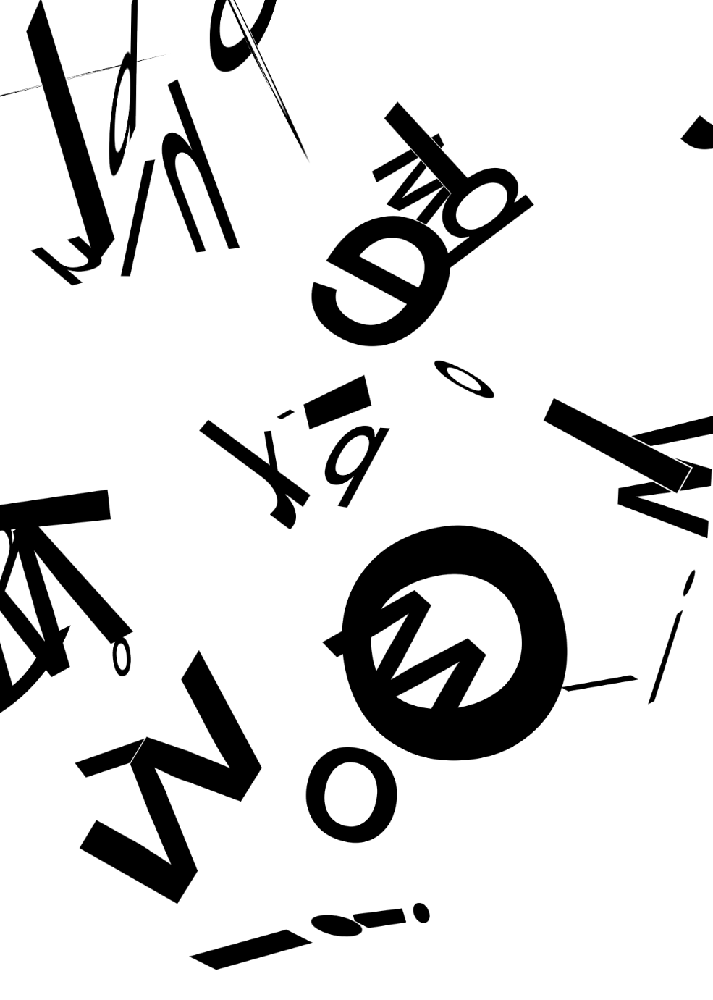
Typographic Network
Explains how algorithms use our clicks, searches, and behaviours to classify us; shaping what we see, how we’re profiled, and who we become online. It shows that algorithmic identities are constructed for institutional use, not personal benefit, revealing how companies define our categories, opportunities, and realities with little transparency or control.
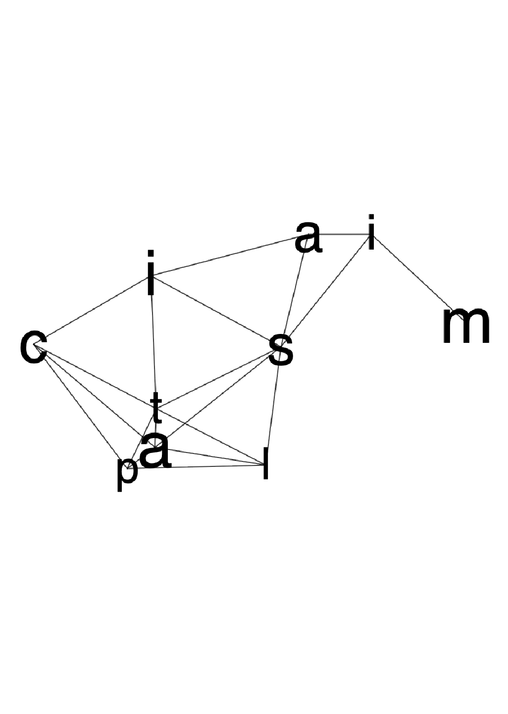
Text Constellation
Transforms user-typed words into a field of drifting letters connected by thin vector lines. As the characters scatter, they remain tethered, echoing how digital traces disperse, yet remain networked beneath the surface. This experiment highlights the hidden infrastructures that bind scattered data into meaning.
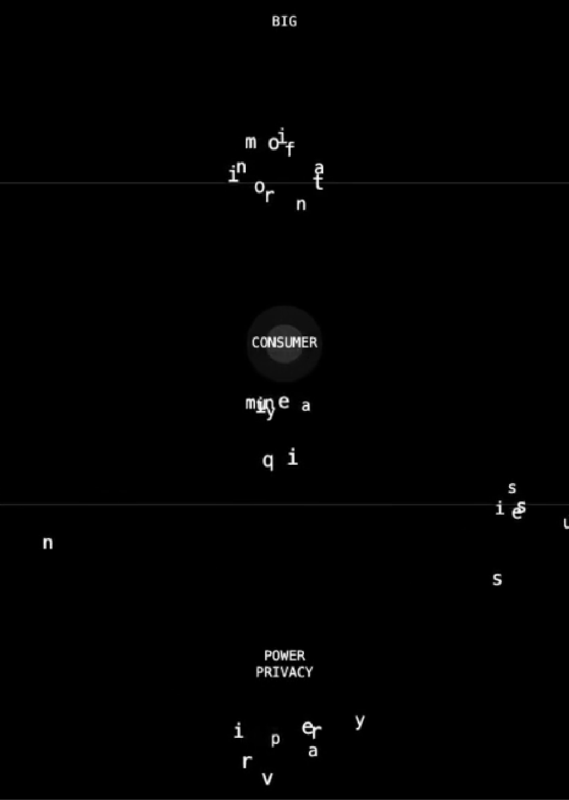
Input Flux
Typographic and classification experiment where user-entered words split into drifting letters that the system automatically sorts into nine data boxes. Over time, these boxes form an archive the user can see but cannot influence, echoing how platforms break down expression into data and reclassify it algorithmically.
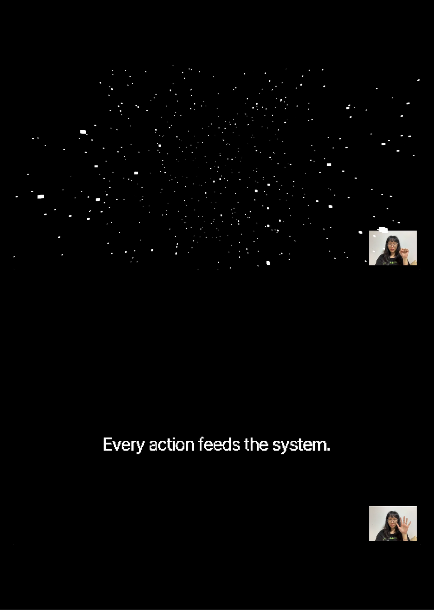
From Gesture to Signal
Hand-tracking, translating movement into data that the system classifies as an "open" or "closed" gesture. Each classification triggers a new sentence about surveillance, datafication, which is then reconstructed as a field of 3D particles. The viewer's gesture becomes the mechanism that activates and rearranges these statement.
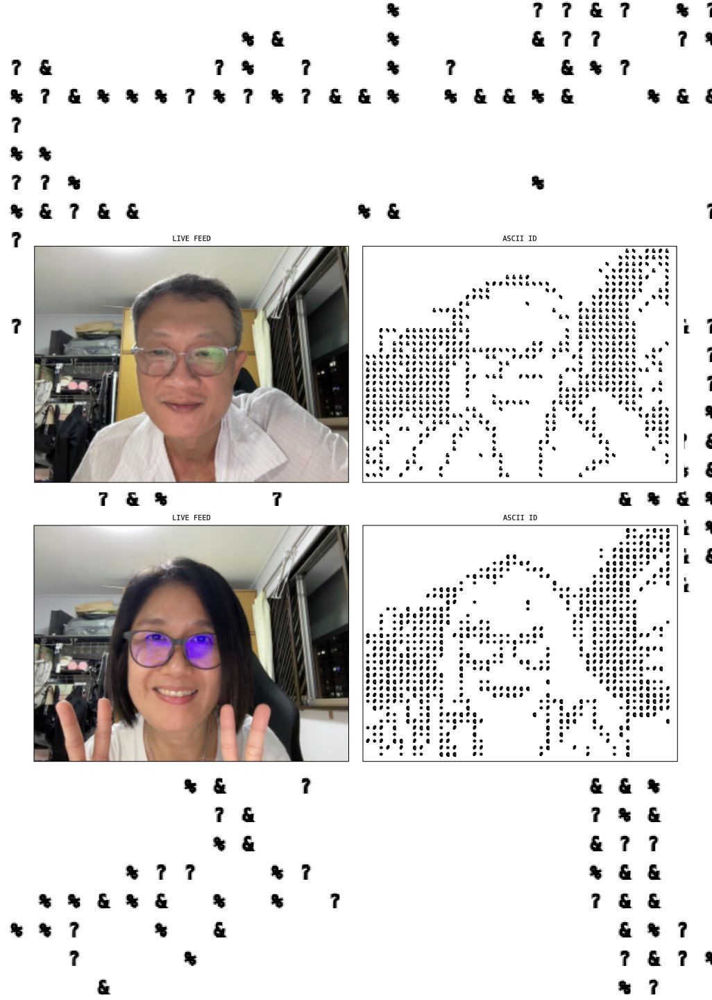
ID://ASCII
Live camera captures the user’s silhouette and reconstructs it as a mosaic made solely from those characters. Displayed beside the real-time reflection, the ASCII version reveals how algorithms compress rich human presence, showing how our digital selves are continuously shaped, limited, and reassembled from the traces we leave behind.
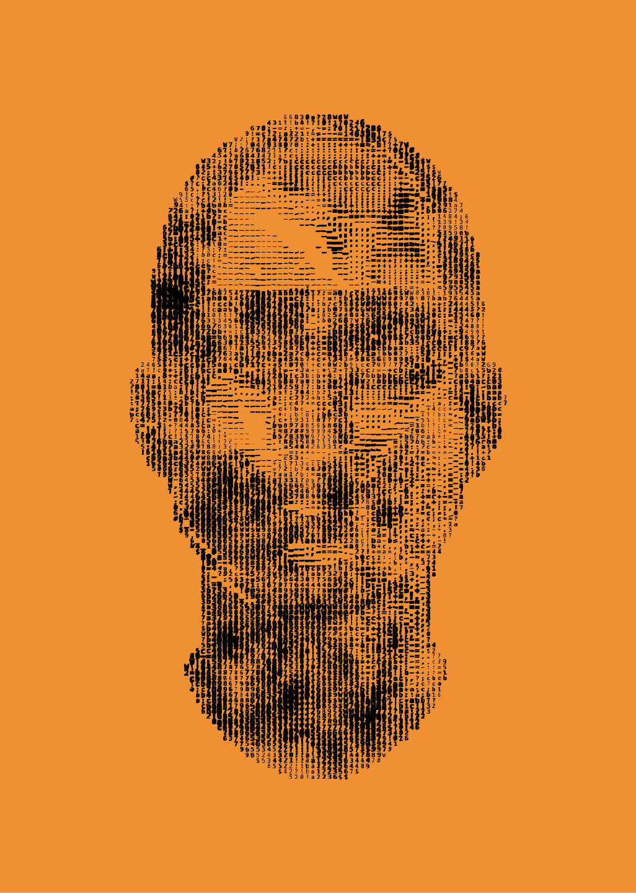
Identity Contagion
Exploring how identity is progressively formed within a system through accumulated keyboard interactions. It focuses on how repeated micro-actions such as key press can contribute incrementally to how a system constructs and recognises a user. with every interaction, the identity becomes increasingly visible,
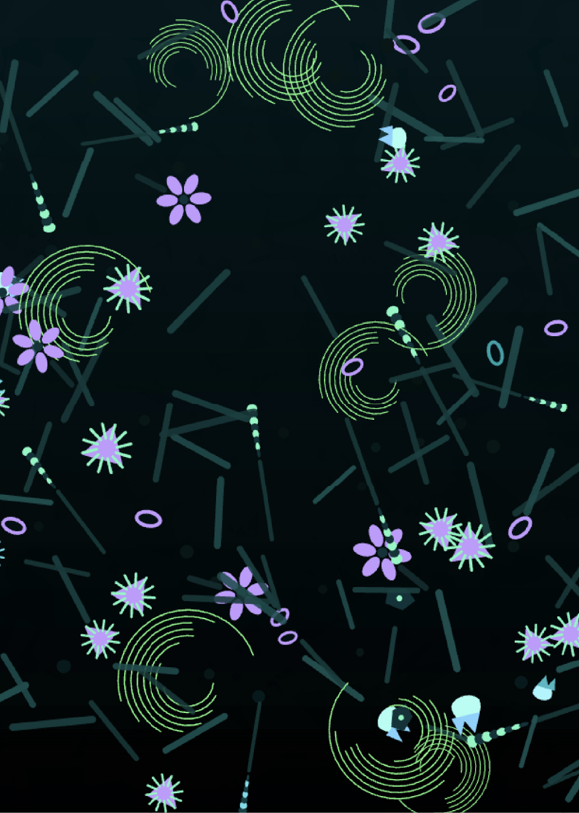
Feed Your Garden
Metaphoric approach in visualising how we "feed" our social media feeds. Every word the user type becomes a seed that the system interprets, and plants flowers that reflect the word. This metaphor mirrors how digital platforms work: every click, search, and pause becomes nourishment for the algorithm. What you "feed" it grows back toward you.
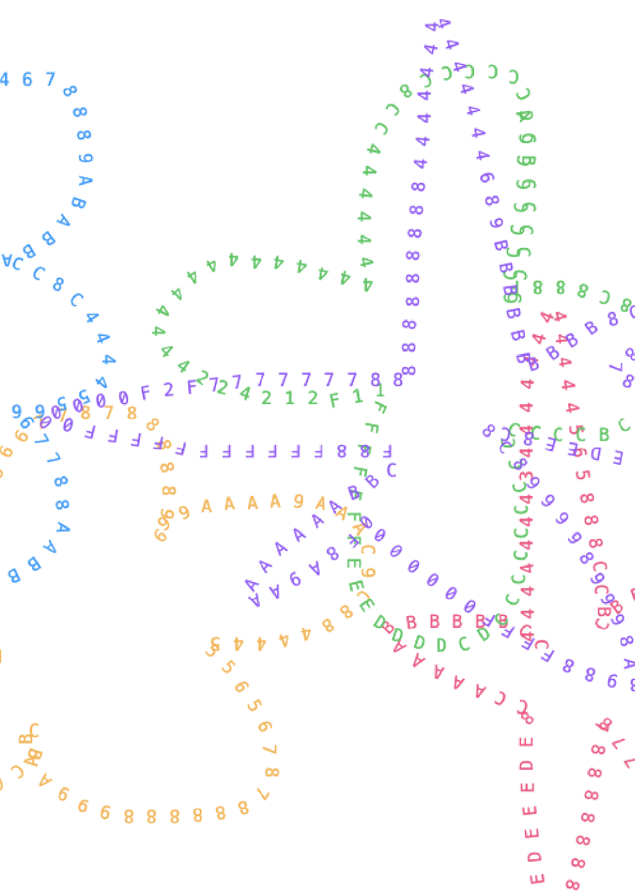
Encode Shape
Transforms five hand-drawn gestures into into encoded shapes. Each drawing is reduced through a sequence of algorithmic transformations from stroke to pixels, dots, and text. The system mimics how platforms record, normalise, and classify user behaviour. What begins as personal expression is flattened into machine-readable traces.
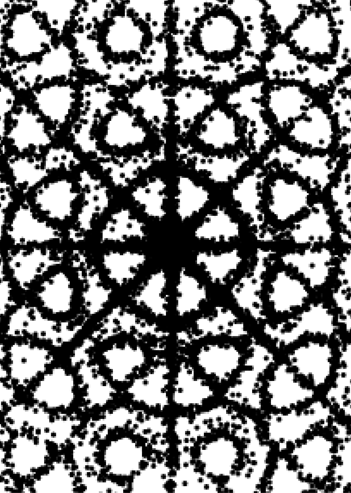
Algorithmic Resonance
Expansion of Experiment 1 (Playlist Visualiser). It explores how a single piece of music can split into two distinct patterns, depending on who, or what, is interpreting it. These patterns reveal the tension between subjective sensing, and computational classification. It offers a glimspe into how identity shifts when lived experience meets data-driven logic.
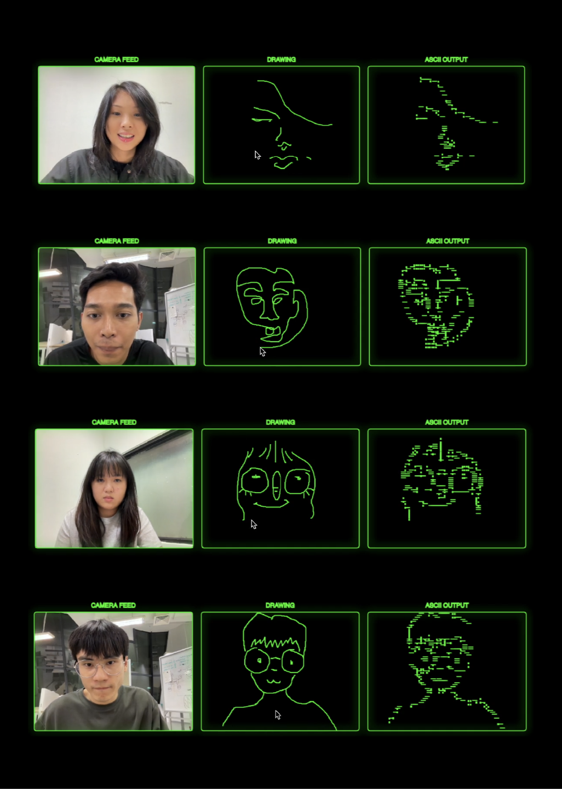
Reconstructed Self
Examines how algorithmic identities are constructed from the smallest actions we make online. Users must choose three ASCII characters, and those characters become the only vocabulary the system is allowed to use. It mirrors the quiet but powerful ways algorithms construct our digital identities from small, seemingly insignificant choices of tiny inputs.
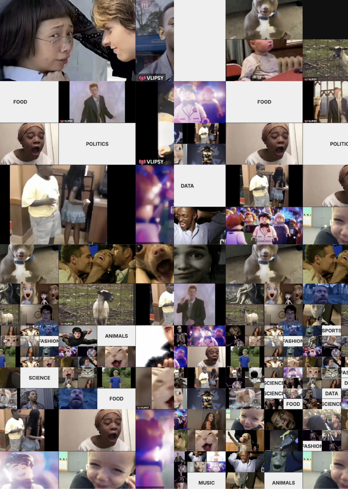
World of Brainrot
Interactive webpage where users are to repeatedly select content they recognise or feel drawn to. At first, the experience feels playful, but beneath the surface, the system is constantly recording behaviour: what is clicked, how often, and in what patterns. These data are being translated into an identity portrait of themselves.
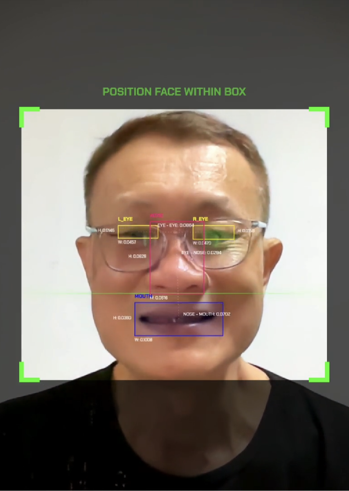
Face Value
Participants are decomposed into measurable landmarks such as eyes, nose, mouth. Each translated into coordinate points and bounding boxes. What appears on the screen is not simply a facial overlay. It is a computational breakdown of detection → landmark mapping → value extraction → categorisation.
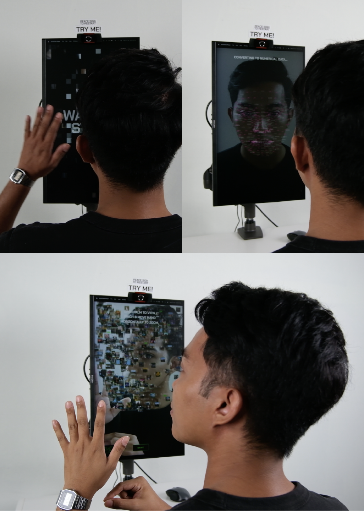
Algorithmic Identities
Three-part interactive work that explores how digital systems turn people into data, and how that data is used to construct a version of us that exists within the system.
It stages biometric extraction, behavioural accumulation, and algorithmic synthesis as a sequential, embodied experience, culminating in a portrait built from participants' own data.